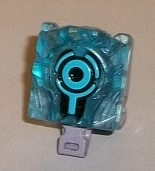
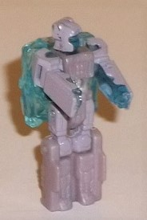
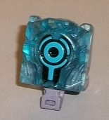
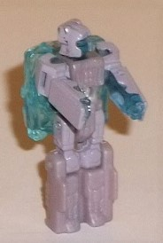
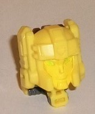
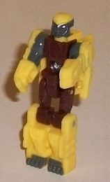
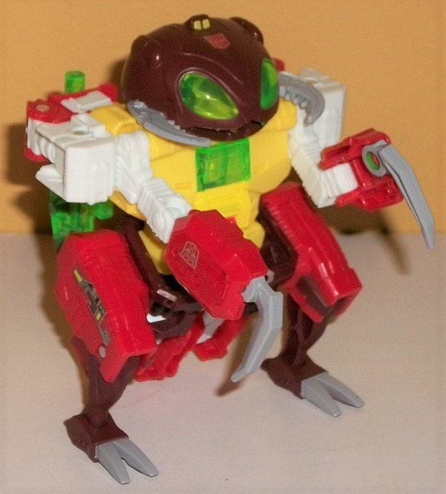
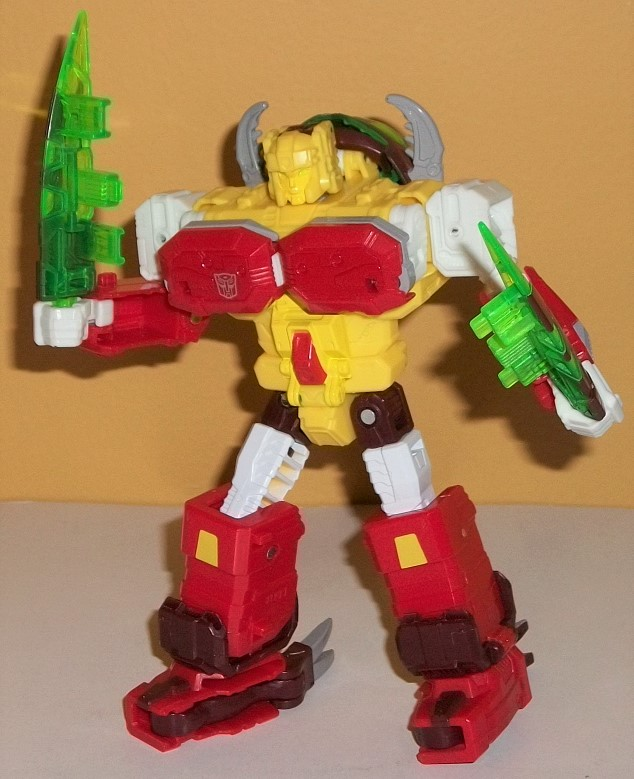

 
Allegiance: Decepticon
Size : Prime Master
Difficulty of Transformation : Very Easy
Color Scheme : Dull lavender, transparent light blue, and some black and light blue
Individual Rating : 3.5
Set Price : ~$25 (U.S.)
(NOTE: Because this set is composed of repaints,
this is not a full-blown review. This mainly covers any changes made to
the set and the color scheme, and merely compares it to the original versions
of these molds. For a review on the original Power of the Primes Solus
Prime-- go
here
. For a review on Titans Return
Autobot Twinferno w/ Daburu-- the mold used for Repugnus w/ Dastard-- go
here
.)
 Solus
Prime (Prime Wars)
Solus
Prime (Prime Wars)


Allegiance:
Decepticon
Size
: Prime Master
Difficulty of Transformation
: Very
Easy
Color Scheme
: Dull lavender, transparent
light blue, and some black and light blue
Individual Rating
: 3.5
Solus Prime is the extra
pack-in Prime Master for this "Prime Wars trilogy" look-back, and this
time around she's colored a bit more like her "Prime Universe" concept
art, with her robot mode mostly a dull lavender and her Core Mode mostly
transparent light blue. (Of course, in terms of the mold itself, there's
still no real resemblance between this toy and her design shown very briefly
on the
Prime
show.) In her robot mode, there's dull lavender paint
used on her upper legs, head, and arms, giving those parts a glossier appearance.
The face of the robot and the insides of the arms are left transparent
light blue. The two colors don't exactly clash, but they don't contrast
against each other all that well, either-- it's just kind of a dull scheme,
especially since every part of her robot mode, minus those unpainted portions,
is dull lavender. Normally I'd say I didn't like the arms being only painted
on the outside, but hey, at least here it gives her more contrast in robot
mode. In core mode, the actual Prime symbol is painted a light blue, with
black paint bordering it to make it more easily visible against the transparent
light blue ackground. As a concept, I like the translucent plastic being
used for a Core Mode, but unfortunately it means all the extra details
surrouding the Prime symbol are washed out and rather hard-to-see, being
unpainted on transparent plastic, now.
No mold changes have
been made to this version of Solus Prime.
 Repugnus
w/ Dastard
Repugnus
w/ Dastard


Allegiances
: Autobot
Size
: Deluxe
Difficulty of Transformation
: Medium
Color Scheme
: Pale yellow, white,
red, dark brown, transparent bright green, and some glossy light gray,
yellow, light green, and glossy dark gray
Individual Rating
: 7.9


Dastard is a retool
of the Daburu Titan Master from Twinferno, and as was the case with
Grotusque's
Titan Master Fengul, BOTH of the heads have been retooled for this guy.
The new head for the individual robot mode looks pretty monster-ish with
big eyes and mandibles on the side-- a lot like if Repugnus' beast head
was made to fit within Titan Master head proportions, really. It honestly
looks pretty weird on a toy with such humanoid proportions. The robot mode
has brown for the body and upper legs, yellow plastic on the rest, and
a surprising amount of paint-- milky gray on the face, insides of the shoulders,
and feet. Thus the colors are broken up pretty well, even if I think the
yellow is a bit too bright to mix well with the brown and gray. The color
scheme is meant to be an homage to the old Battle Beast toy Hedgehog, just
like the other 2 Monsterbot Titan Masters are also Battle Beasts homages.
The head mode has a look that more closely matches Repugnus' appearance
in the G1 cartoon, whereas the
Titan Master
that came with its own accessory set focused more on Repugnus' toy look.
For this version, Repugnus still has the side antenne, along with a center
bump in his "helmet" and large side "chin guards". His face looks more
"normal", however, with more typical-sized green eyes and a normal nose
and mouth. He generally just looks more friendly, though I find it odd
his face is painted yellow when the rest of his head is yellow plastic.
There's very little contrast here, despite the paint, so he looks a bit
dull here.
Repugnus is a very significant
retool of Twinferno-- in fact, the only substantial parts of the toy that
have been kept intact are parts of the legs and their transformation--
though even there, the beast mode feet are now two-toed and more robotic-looking,
the lower robot legs have smoother, different detailing, and the tail flap-halves
have been removed, since Repugnus has no tail in beast mode. The back of
the "core" body is also the same, with the same place for a Titan Master
to stand near the top of the back. The front of the main body still houses
the cockpit for the Titan Master, with a fold-out front revealing the seat.
The details of the chest are completely different, though, with some angular
mold details, particularly on the abs, and some rounder details near the
top of the chest. Repugnus' claw-arms are rather small proportionally,
one of the downsides to the sharing of engineering; there just wasn't enough
room in his modified transformation for full-fledged shoulders for these
arms! The lower arms also are definitely hollow-looking from an inside
angle, though they have some neat circuitry-like details molded into the
outer portions. The head is certainly something else, looking like some
round-headed ant monster, complete with giant green bug eyes, large gray
mandibles, a "regular" toothed mouth, and some minor rounded technorganic
details on the top. The robot arms are pretty obvious in this mode, and
most definitely the biggest eyesore; they're just... there on the outside
of the beast shoulders, with the lower arms obviously folded up behind
the upper back, and with the hands also blatantly folded into those lower
arms! It adds some unnecessary bulk and is just very weird-looking. Repugnus
comes with 2 new weapons-- swords, which are attached to his back as insect
wings in this mode. Like with many Titans Return weapons, they both can
combine, and a Titan/Prime Master can sit in the middle of the larger,
wider weapon. The colors for Repugnus are pretty unique and varied, with
a pale yellow making up most of his chest, while white appears more on
his upper appendages and red on his lower appendages and upper legs. There's
also some brown on the head, waist, and lower legs. My favorite addition
is a really eye-catching shade of transparent bright green, used for his
weapons as well as his eyes and the top part of his cockpit-chest piece.
It goes exceedingly well with the other colors, and in general it's a decent
scheme, though I find there to be one or two too many colors used too much;
perhaps scaling back on the brown would've looked better. For paint apps,
there's some G1-like circuitry detail decals on the sides on the upper
legs, gray on his mandibles, claws, and feet, and two little yellow lights
on the top of his head. Because it's cast in transparent green plastic,
the center cockpit piece is also painted mostly yellow with some red in
the center. The yellow is a slight mismatch when you compare paint to plastic,
but it's not a huge deal. For articulation in beast mode, Repugnus can
move at the jaw, shoulders (at two points), elbows (at two points), at
the top of each claw, and at the hips (at two points), knees, and ankles--
so pretty decent for an ant...monster...thing, overall.
The legs are the most
complicated part of the transformation, and they're taken completely from
Twinferno and Grotusque-- beyond that, rotate the robot arms out from the
sides and unfold the hands, take off the wings form the back and fold the
beast mode head back there, fold up the beast claws and arms to form the
pecs, and then plug in the Titan Master and you're done. The end result
looks pretty good, and is definitely the better of Repugnus' two modes.
The beast arms make for some pretty weirdly wide and large pecs, but otherwise
the chest is the same as on the beast mode. The beast mode head on the
back is a minor extra, and doesn't get in the way of articulation-- heck,
I think the way the mandibles frame the head actually enhances his silhouette.
The arms are pretty decent and proportional-- nothing particularly bad
or awesome about them. The additional paint apps in this mode that are
visible are some yellow on the kneecaps and some gray on the sides of the
lower arms-- otherwise the color breakup is, more or less, carried over
from beast mode. For articulation in this mode, Repugnus can move at the
neck, shoulders (at three points), elbows, inwards at the wrists, and movement
at the hips (at three points), knees, and ankle tilts, thus making Repugnus
pretty articulated in THIS mode, as well.
The Prime Wars "Trilogy"
version of Titans Return Repugnus definitely gives a more "full" update
to the original G1 toy compared to the Titan Master accessory set, and
is thus an easy recomendation over the the original Titans Return release
of this character. However, out of the three times this base mold has been
used for each of the Monsterbots, the Repugnus use is the weakest (by a
slim margin). The robot mode still looks pretty good and has great proportions
and articulation, but the beast mode has some pretty awkward proportions
here and there-- like very obvious robot arms sticking out the sides, while
the actual beast arms are too skinny. Still, a decent toy, and it comes
with a nice (though forgettable) little bonus Prime Master, too.
Reviews by Beastbot